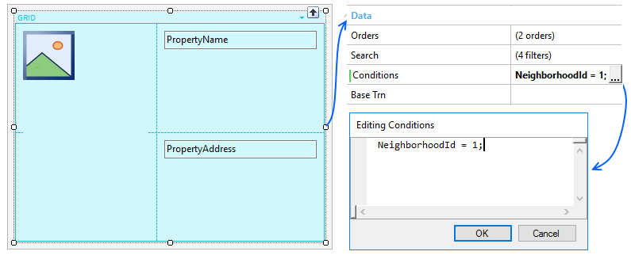
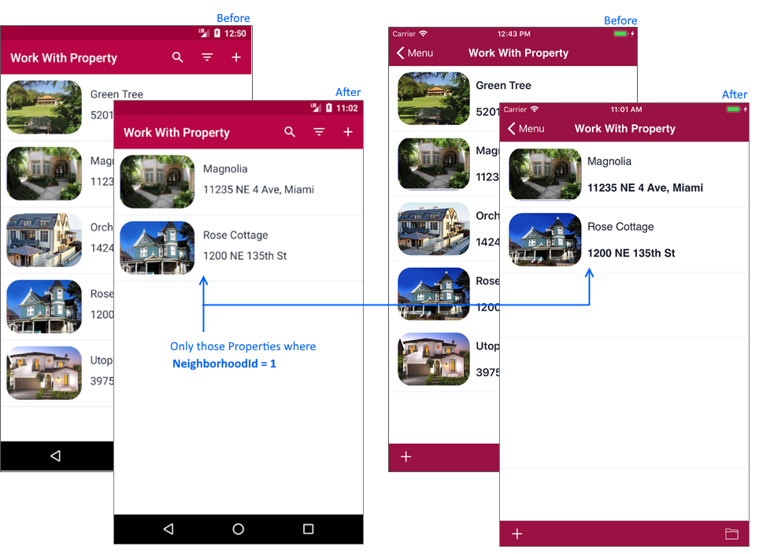

Conditions property
To define filter(s) to be taken into account when navigating records that will be loaded on the grid control. Description
A condition is a logical expression (its evaluation is True or False), that may include attributes, constant values, variables, functions, and other expressions. Attributes must belong to the extended table of the base table where the condition is applied. For adding new conditions criteria you must:
To remove conditions there are two options:
Note: Run-time/Design-timeThis property applies only at design-time. Samples
Having the grid defined below, the condition will filter those Properties where belongs to the neighborhood with Id = 1.  In the example above, without the filter, we have all records in our system; but after applying the condition criteria, we only have two.  This example is available on RealEstate. Scope Platforms: Web(.Net, Java), Smart Devices(Android, IOS) See Also
|
 which displays the editing conditions prompt.
which displays the editing conditions prompt.| Backlinks | |
| Free Style Grid Properties | HowTo: In-app search in Smart Devices |
| Orders and Filters in Grids for Smart Devices |